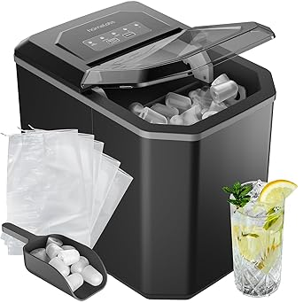
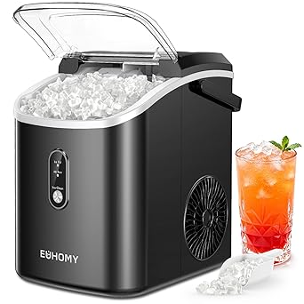
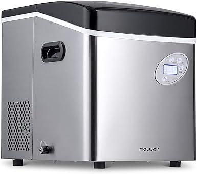
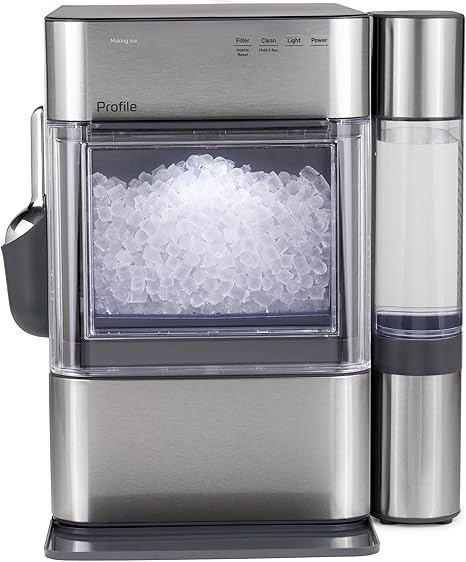
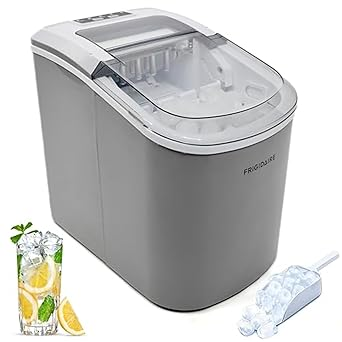

← bestice-maker.com
No-BS Ice Maker Guide for 2026
May 2026
Whether you're upgrading or buying your first, the right ice maker in 2026 comes down to a few factors most buyers overlook.
Critical Factors Most Miss
- Total cost of ownership — The cheapest ice maker upfront can be the most expensive over time with replacements and accessories.
- Compatibility — Always double-check that ice maker fits your specific setup before ordering.
- Price trends — ice maker prices fluctuate. Track your picks and buy when the price dips.
- Build quality — Cheap ice maker fall apart fast. Look for solid construction and quality materials.
- Dimensions matter — Read the actual measurements. "Large" means different things to different ice maker manufacturers.
Lessons from Real Buyers
Ignoring the fine print — Some ice maker listings look great until you realize key parts are sold separately.
Panic buying on sale days — Prime Day and Black Friday ice maker deals aren't always real discounts. Check year-round pricing.
What We Recommend





From Our Testing Notes
- Buying ice maker as a gift? Pick something with easy exchanges. Preferences are personal.
- Set a firm budget before browsing. It's easy to creep up $50-100 comparing ice maker features.
- Set price alerts on your top picks. ice maker prices can drop 30-40% without warning.
- The 3-star reviews are gold. They're usually the most balanced and honest takes on ice maker.
The Bottom Line
Our comparison tables on bestice-maker.com break down options by price, features, and ratings. Start there.
Affiliate Disclosure: As an Amazon Associate, we earn from qualifying purchases. This doesn't affect our recommendations.